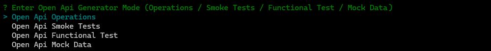
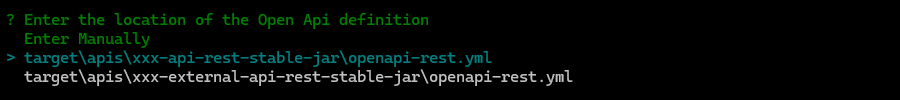
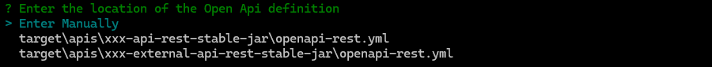
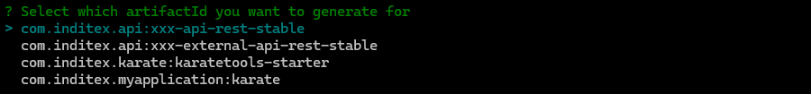

| The operations are the base for the execution of all the tests, so this is a mandatory step which should be the first step of the generation process. |
Karate Operations: Generates operation feature files and validation schemas which will be shared for all tests for each of the Open API defined paths and methods.
-
The generation steps are the following:
-
Enter the location of the Open Api definition
-
Select which Operations (path and method) you want to generate for
-
Select the artifactId you want to generate for
-
Execute open-api-generator - Operations
Execute open-api-generator and select generation mode "Operations".
mvn exec:java@open-api-generator
Select generation mode using the up/down arrows ↑ ↓ and afterwards intro to proceed ↲ to next step.
|
? Enter Open Api Generator Mode (Operations / Smoke Tests / Functional Test / Mock Data)
> Open Api Operations
Open Api Smoke Tests
Open Api Functional Test
Open Api Mock Data
1. Enter the location of the Open Api definition
For generation mode Open Api Operations, the open-api-generator will search for any yml files with openapi definitions in the karate module folders and list them to be chosen for open-api-generation.
? Enter Open Api Generator Mode (Operations / Smoke Tests / Functional Test / Mock Data) Open Api Operations
? Enter the location of the Open Api definition
Enter Manually
> target\apis\xxx-api-rest-stable-jar\openapi-rest.yml
target\apis\xxx-external-api-rest-stable-jar\openapi-rest.yml
Select open api definiton using the up/down arrows ↑ ↓ and afterwards intro to proceed ↲ to next step.
|

It will also allow to enter the file location manually by selecting Enter Manually
? Enter Open Api Generator Mode (Operations / Smoke Tests / Functional Test / Mock Data) Open Api Operations
? Enter the location of the Open Api definition Enter Manually
? Enter the location of the Open Api definition (Enter Manually) target\apis\xxx-api-rest-stable-jar\openapi-rest.yml
|
If no Open Api file is provided or if the Open Api file is invalid an error will be displayed:
|
2. Select which Operations (path and method) you want to generate for
For the selected openapi-rest.yml file, the open-api-generator will list all the paths and methods from which operation files can be generated. In an initial execution you should select them all. For Open Api updates you should only select the new or updated methods/paths.
? Enter Open Api Generator Mode (Operations / Smoke Tests / Functional Test / Mock Data) Open Api Operations
? Enter the location of the Open Api definition target\apis\xxx-api-rest-stable-jar\openapi-rest.yml
? Select which Operations you want to generate for
> (*) all
( ) GET /items/{itemId} showItemById
( ) POST /items createItems
( ) GET /items listItems
Select methods & paths using the up/down arrows ↑ ↓, mark/unmark the selection with space and afterwards intro to proceed ↲ to next step.
|

|
If no Operations are selected an error will be displayed:
|
3. Select the artifactId you want to generate for
Once the operations are selected, the open-api-generator will list all the artifacts defined in the pom.xml to choose the target artifact for the operations.
You must select the artifact Id of the Open Api (com.mypackage.api:xxx-api-rest-stable)
|
? Enter Open Api Generator Mode (Operations / Smoke Tests / Functional Test / Mock Data) Open Api Operations
? Enter the location of the Open Api definition target\apis\xxx-api-rest-stable-jar\openapi-rest.yml
? Select which Operations you want to generate for [all]
? Select which artifactId you want to generate for
> com.mypackage.api:xxx-api-rest-stable
com.mypackage.api:xxx-external-api-rest-stable
dev.inditex.karate:karatetools-starter
com.mypackage:karate
...
Select artifactId using the up/down arrows ↑ ↓ and afterwards intro to proceed ↲ to next step.
|

Review Generated operations and schemas
For each operation the open-api-generator generates:
-
feature file with the karate code for the operation
-
schema file(s) with the karate schema(s) for the structure validation of each of the responses
-
target API Url configuration update in the
config.yml/config-<env>.ymlfiles
The operations files are generated in the folder src/test/resources/apis/<API_PACKAGE> organized by API Tags, for example: src/test/resources/apis/com/mypackage/api/xxx-api-rest-stable
Example of the structure of the generated operations:
+---src
\---test
\---resources
\---apis
\---com
\---mypackage
\---api
\---xxx-api-rest-stable
\---BasicApi
+---createItems
| | createItems.feature
| |
| \---schema
| createItems_201.schema.yml
| createItems_default.schema.yml
|
+---listItems
| | listItems.feature
| |
| \---schema
| Items_200.schema.yml
| listItems_200.schema.yml
| listItems_default.schema.yml
|
\---showItemById
| showItemById.feature
|
\---schema
showItemById_200.schema.yml
showItemById_404.schema.yml
showItemById_default.schema.ymlOperations feature file
feature file with the karate code for the operation with the following format
@ignore
@op.<OPERATION_ID>
Feature: <OPERATION_SUMMARY>
<OPERATION_DESCRIPTION>
Background:
* url urls.<ARTIFACT_NAME_URL>
Scenario: <OPERATION_ID>
* def req = __arg
* def authHeader = call read('classpath:karate-auth.js') req.auth
* def headers = karate.merge(req.headers || {}, authHeader || {})
Given path <OPERATION_PATH>
And param <PARAMETER_X> = req.params.<PARAMETER_X>
And headers headers
When method <OPERATIION_METHOD>
* def expectedStatusCode = req.statusCode || responseStatus
* match responseStatus == expectedStatusCode
# match response schema in 'test-data' or any object
* def responseContains = req.matchResponse === true && req.responseMatches? req.responseMatches : responseType == 'json'? {} : ''
* match response contains responseContainsFor example listItems.feature:
@ignore
@op.listItems
Feature: List all items
List all items
Background:
* url urls.xxxApiRestStableUrl
Scenario: listItems
* def req = __arg
* def authHeader = call read('classpath:karate-auth.js') req.auth
* def headers = karate.merge(req.headers || {}, authHeader || {})
Given path '/items'
And param limit = req.params.limit
And headers headers
When method GET
* def expectedStatusCode = req.statusCode || responseStatus
* match responseStatus == expectedStatusCode
# match response schema in 'test-data' or any object
* def responseContains = req.matchResponse === true && req.responseMatches? req.responseMatches : responseType == 'json'? {} : ''
* match response contains responseContainsOperations schema file(s)
schema file(s) with the karate schema for the structure validation of each of the responses. For example:
-
Simple schema
showItemById_200.schema.yml:name: "#string" id: "#number" tag: "##string" -
Complex schema
listItems_200.schema.yml:"#[] read('classpath:apis/com/mypackage/api/xxx-api-rest-stable/BasicApi/listItems/schema/Items_200.schema.yml')"where
Items_200.schema.ymlwould bename: "#string" id: "#number" tag: "##string"
Operations target API Url
target API Url configuration update in the config.yml / config-<env>.yml files
# urls: karate urls used for target environments and authentication
urls:
...
xxxxApiRestUrl: "#('http://localhost:' + (karate.properties['APP_PORT'] || 8080) + '/TO_BE_COMPLETED')"
#karate-utils-new-karate-url-marker (do not remove) - new generated apis urls will be placed here automatically